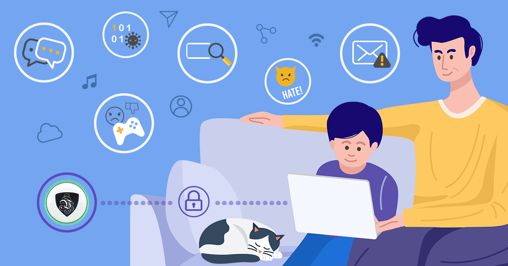
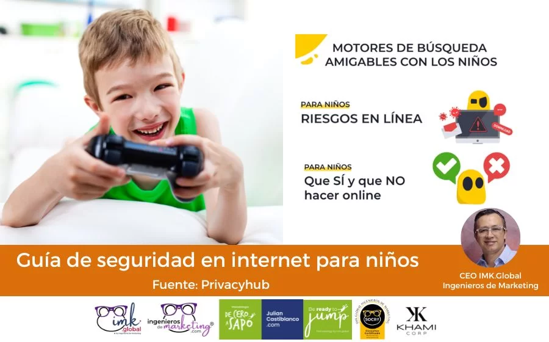

Planificacion uso de Internet
https://ju691.github.io/electro/

1. Estudiantes
Las preocupaciones de los estudiantes suelen estar relacionadas con su experiencia directa en la web y las interacciones sociales en línea. Entre sus principales necesidades y preocupaciones, se destacan las siguientes:
Preocupaciones principales:
Ciberacoso (Cyberbullying): Muchos estudiantes temen ser víctimas de acoso en línea, lo cual puede afectar gravemente su bienestar emocional y mental.
Privacidad de datos: Los estudiantes a menudo no son conscientes de los riesgos relacionados con compartir información personal (como fotos, contraseñas o ubicaciones) en redes sociales o aplicaciones.
Acceso a contenido inapropiado: Temen ser expuestos a contenido violento, explícito o inapropiado mientras navegan en línea, ya sea por error o por falta de control parental.
Adicción a las redes sociales o videojuegos: Algunos estudiantes se sienten abrumados por el tiempo que pasan frente a las pantallas, lo que puede llevar a un comportamiento adictivo y afectar su rendimiento escolar y relaciones sociales.
Riesgos de estafas en línea: Los estudiantes pueden caer en trampas de fraude en línea, como engaños relacionados con juegos, sorteos o productos falsificados.
Necesidades:
Educación sobre privacidad: Aprender a gestionar su información personal y cómo ajustar la configuración de privacidad en plataformas digitales.
Desarrollo de habilidades críticas: Ser capaces de identificar riesgos, como el ciberacoso o los intentos de fraude, y saber cómo actuar ante estas situaciones.
Fomentar el uso equilibrado de tecnología: Estrategias para utilizar Internet de manera saludable, evitando el abuso y promoviendo el bienestar digital.
2. Padres
Los padres suelen estar muy preocupados por la seguridad y el bienestar de sus hijos en línea. Sus principales preocupaciones incluyen los riesgos que los menores pueden enfrentar al navegar por Internet y cómo protegerlos adecuadamente.
Preocupaciones principales:
Ciberacoso y grooming: El temor de que sus hijos puedan ser acosados o contactados por personas desconocidas con intenciones maliciosas.
Acceso a contenido inapropiado: Inquietud por que sus hijos puedan encontrar materiales inadecuados para su edad, como violencia, drogas o contenido sexual.
Dependencia digital: Los padres se preocupan por la cantidad de tiempo que sus hijos pasan en dispositivos, lo que podría afectar su salud mental y socialización.
Falta de conocimiento en herramientas de control parental: Muchos padres no están familiarizados con las herramientas tecnológicas que pueden ayudarles a controlar el acceso a contenidos o limitar el tiempo de pantalla.
Problemas de privacidad: Preocupación por la exposición de los datos personales de sus hijos, como en redes sociales o aplicaciones, y cómo protegerlos de la recopilación no autorizada de información.
Necesidades:
Herramientas de control parental: Necesitan conocer las mejores herramientas y estrategias para supervisar y gestionar la actividad en línea de sus hijos.
Educación sobre riesgos digitales: Información sobre cómo identificar señales de alerta de ciberacoso, grooming, y otros peligros en línea, así como cómo conversar sobre estos temas con sus hijos.
Guias sobre privacidad digital: Instrucciones sobre cómo proteger la privacidad en las plataformas digitales, qué configuraciones de seguridad aplicar y cómo educar a los niños sobre el uso responsable de la tecnología.
3. Educadores
Los educadores también enfrentan desafíos relacionados con la seguridad en línea, tanto en su rol de enseñar a los estudiantes como en el uso de las tecnologías para impartir clases.
Preocupaciones principales:
Ciberacoso entre estudiantes: Los educadores temen que los incidentes de ciberacoso ocurran dentro de la comunidad escolar y que no siempre sea evidente en el entorno físico.
Impacto en el rendimiento académico: La distracción debido a las redes sociales, videojuegos o la navegación sin control puede afectar el rendimiento escolar de los estudiantes.
Brecha de conocimiento tecnológico: Muchos educadores no se sienten completamente capacitados para enseñar sobre seguridad digital o para abordar problemas como el ciberacoso, debido a la rápida evolución de la tecnología.
Desafíos para enseñar sobre seguridad en línea: Los maestros tienen la necesidad de integrar la educación sobre seguridad en línea en su plan de estudios, pero a menudo carecen de recursos específicos y formación adecuada.
Protección de datos escolares: En el contexto educativo, el manejo de la información personal de los estudiantes es crucial, y los educadores pueden estar preocupados por cómo proteger esa información frente a posibles amenazas cibernéticas.
Necesidades:
Capacitación continua: Formación en cómo identificar riesgos digitales y enseñar a los estudiantes sobre seguridad en línea, así como cómo manejar situaciones de ciberacoso.
Herramientas educativas: Materiales y recursos para incorporar la educación sobre ciberseguridad en el aula, desde juegos y actividades hasta lecciones prácticas.
Apoyo institucional: Necesitan políticas claras y apoyo de las autoridades educativas para abordar los problemas relacionados con la seguridad en línea, incluyendo protocolos para manejar incidentes de ciberacoso o exposición a contenido inapropiado.
Objetivo plan cronogramico del uso de Internet

Cronograma: Plan de Acción sobre el Uso Responsable de Internet
Semana Actividad Objetivo Responsables
Semana 1 Introducción al uso responsable de Internet Sensibilizar sobre la importancia de un uso seguro y responsable de la tecnología. Educadores / Padres
Semana 2 Talleres sobre privacidad y seguridad digital Enseñar sobre la protección de datos personales y contraseñas seguras. Educadores / Padres
Semana 3 Ciberacoso: Prevención y actuación Concienciar sobre el ciberacoso, sus riesgos y cómo actuar ante él. Educadores / Estudiantes
Semana 4 Uso saludable de la tecnología Promover el equilibrio entre el uso de tecnología y otras actividades. Estudiantes / Padres
Semana 5 Educación en redes sociales: buenas prácticas Identificar las buenas prácticas en redes sociales, privacidad y respeto en línea. Estudiantes / Padres
Semana 6 Implementación de controles parentales y herramientas de seguridad Capacitar a los padres en el uso de herramientas para supervisar la actividad en línea de sus hijos. Padres / Educadores
Semana 7 Evaluación de la comprensión y prácticas de los estudiantes Revisar lo aprendido y evaluar la implementación de las prácticas responsables en línea. Educadores / Estudiantes
Semana 8 Seguimiento y re-evaluación del uso responsable Hacer un seguimiento de los avances y ajustar las estrategias para un uso responsable y seguro. Padres / Educadores
Plan de Acción: Uso Responsable de Internet
1. Objetivos Generales
Promover un uso seguro de Internet, protegiendo la privacidad de los estudiantes.
Fomentar la responsabilidad en línea y la prevención del ciberacoso.
Ayudar a los estudiantes, padres y educadores a manejar adecuadamente la tecnología de manera equilibrada y saludable.
Proveer herramientas y recursos para gestionar el acceso a contenidos y proteger a los menores.
2. Fases del Plan
Fase 1: Sensibilización y Capacitación Inicial
Dirigido a: Estudiantes, padres y educadores.
Actividad principal: Charla inicial sobre el uso responsable de Internet, sus riesgos y beneficios. Esta actividad debe incluir temas como:
La importancia de la privacidad en línea.
El concepto de ciberseguridad (contraseñas, protección de datos, redes sociales).
Ciberacoso y cómo prevenirlo o actuar frente a él.
Fase 2: Formación y Educación Práctica
Dirigido a: Estudiantes y padres.
Actividad principal: Talleres prácticos sobre cómo:
Ajustar la configuración de privacidad en redes sociales y aplicaciones.
Crear contraseñas seguras y la importancia de no compartirlas.
Reconocer señales de ciberacoso y cómo actuar ante situaciones problemáticas.
Utilizar herramientas de control parental (por ejemplo, bloqueadores de contenido y monitoreo de tiempo de pantalla).
Fase 3: Implementación de Estrategias y Seguimiento
Dirigido a: Estudiantes, padres y educadores.
Actividad principal: Implementar estrategias de control y prevención:
Los padres pueden establecer límites de tiempo para el uso de dispositivos y supervisar las actividades en línea mediante herramientas tecnológicas.
Los educadores integran actividades de concientización sobre la ética en línea y el respeto por los demás en su plan de estudios.
Los estudiantes deben practicar el uso responsable y aplicar los conocimientos adquiridos en sus actividades diarias.
Fase 4: Evaluación y Retroalimentación
Dirigido a: Estudiantes, padres y educadores.
Actividad principal: Revisión periódica de los avances y ajustes según sea necesario:
Encuestas para evaluar el nivel de comprensión y aplicación de las buenas prácticas en el uso de Internet.
Revisión de incidentes de ciberacoso u otros problemas digitales, y cómo se resolvieron.
Recoger retroalimentación de los padres y educadores sobre la efectividad de las herramientas y estrategias implementadas.
Fase 5: Promoción del Bienestar Digital
Dirigido a: Estudiantes, padres y educadores.
Actividad principal: Continuar promoviendo un uso equilibrado de la tecnología, recordando la importancia de otras actividades como el deporte, la lectura y el contacto social fuera de las pantallas.
3. Herramientas y Recursos
Control Parental:
Herramientas como Family Link (Google) o Qustodio para monitorear y gestionar el tiempo de pantalla y acceso a contenido.
Recursos de Educación:
Interland (Google) – Juegos interactivos para enseñar a los niños sobre seguridad en línea.
Ciberseguridad Infantil (Fundación Orange) – Materiales y guías educativas sobre cómo estar seguros en Internet.
Campañas de Sensibilización:
Participación en el Día de Internet Seguro (Safer Internet Day), donde se realizan actividades y charlas tanto en escuelas como en comunidades.
Materiales de Formación:
Videos y presentaciones sobre el uso responsable de redes sociales, el manejo de la privacidad y cómo identificar riesgos en línea.
4. Evaluación Final y Recomendaciones
Al final del plan de acción, es importante llevar a cabo una evaluación final para medir los logros alcanzados, y si es necesario, realizar ajustes en las estrategias de enseñanza y control. Se debe fomentar un ambiente continuo de aprendizaje y ajuste a medida que evolucionan las tecnologías y las amenazas en línea.
Con este enfoque, se espera que los estudiantes, padres y educadores logren no solo entender la importancia de la seguridad en línea, sino también aplicar de manera efectiva hábitos responsables que fomenten un entorno digital más seguro y equilibrado.
Recursos educativos
Cursos Online Gratuitos y Certificaciones
CISA (Certified Information Systems Auditor) – Coursera y edX:
Estas plataformas ofrecen cursos sobre ciberseguridad que incluyen temas de protección de datos, auditoría de sistemas y gestión de riesgos.
Coursera tiene cursos de universidades como la Universidad de Maryland y la Universidad de Stanford.
Cisco Networking Academy:
Ofrece un curso titulado Cybersecurity Essentials, en el que se cubren temas sobre amenazas cibernéticas, protección de redes, y cómo proteger los dispositivos.
Es un excelente punto de partida para principiantes.
Cybrary:
Plataforma de formación en línea especializada en ciberseguridad, con opciones tanto gratuitas como premium.
Sus cursos cubren una gran variedad de temas, desde principios básicos hasta conceptos avanzados.
Udemy:
Tiene una gran cantidad de cursos pagos y gratuitos sobre ciberseguridad. Muchos de estos son impartidos por expertos en el campo.
Algunos cursos recomendados son Introducción a la Ciberseguridad y Protección de la Información Personal.
Plataformas Educativas de Ciberseguridad
OWASP (Open Web Application Security Project):
OWASP ofrece recursos gratuitos sobre cómo proteger las aplicaciones web de ataques cibernéticos. En su sitio puedes encontrar guías, herramientas, y cursos.
Su Top 10 es una excelente introducción a las vulnerabilidades más comunes en la web.
Khan Academy:
Tiene recursos educativos gratuitos sobre conceptos básicos de informática y seguridad.
Aunque no está centrado exclusivamente en ciberseguridad, sus lecciones sobre redes y criptografía son un buen punto de partida.
National Institute of Standards and Technology (NIST):
El NIST publica guías, estándares y recursos sobre ciberseguridad. La serie Cybersecurity Framework es muy recomendada para aquellos interesados en proteger la información.
Google Security Blog:
Aunque no es un curso formal, este blog es útil para estar al tanto de las últimas noticias y mejores prácticas de ciberseguridad, además de consejos prácticos de seguridad digital.
Libros y Artículos Especializados
"The Web Application Hacker's Handbook" de Dafydd Stuttard y Marcus Pinto:
Este libro es uno de los más completos para entender las vulnerabilidades de las aplicaciones web y cómo defenderlas.
"Ciberseguridad para Dummies":
Un libro introductorio que cubre de manera clara y sencilla los conceptos básicos de la seguridad cibernética.
"Hacking: The Art of Exploitation" de Jon Erickson:
Para aquellos interesados en cómo los atacantes explotan las vulnerabilidades, este libro profundiza en las técnicas y métodos utilizados por los hackers.
Videos y Tutoriales
YouTube:
Cybersecurity & Infrastructure Security Agency (CISA) tiene un canal de YouTube donde publica videos educativos sobre ciberseguridad.
Canal como Professor Messer también ofrece tutoriales gratuitos relacionados con ciberseguridad.
TED Talks sobre Ciberseguridad:
En el sitio web de TED hay charlas de expertos en seguridad cibernética que abordan temas desde el hacking ético hasta la protección de datos.
Simuladores y Juegos Educativos
TryHackMe:
Es una plataforma interactiva que permite a los usuarios aprender ciberseguridad mediante simulaciones prácticas y retos de hacking ético.
Hack The Box:
Otra plataforma que ofrece laboratorios prácticos para quienes deseen aprender técnicas de hacking ético y ciberseguridad.
Normativas y Buenas Prácticas
ISO/IEC 27001:
Un estándar internacional que proporciona un marco para gestionar la seguridad de la información. Aunque es más técnico, muchos profesionales utilizan este estándar como base para proteger la información.
GDPR (Reglamento General de Protección de Datos):
Es crucial conocer los requisitos legales sobre protección de datos, especialmente si trabajas en Europa o con datos de ciudadanos europeos.
Blogs y Sitios Web Especializados
Krebs on Security:
Un blog que cubre los incidentes más recientes de ciberseguridad y proporciona análisis detallados sobre amenazas actuales.
SANS Institute:
Ofrece tanto recursos educativos como una comunidad activa en la que puedes aprender sobre ciberseguridad, además de proporcionar formación con certificaciones muy reconocidas.
Bleeping Computer:
Es un sitio web que proporciona noticias y tutoriales relacionados con ciberseguridad, además de ser una fuente confiable para resolver problemas relacionados con malware y otros riesgos informáticos.
Instituciones y Organizaciones
European Union Agency for Cybersecurity (ENISA):
Ofrecen informes, guías, y materiales educativos sobre ciberseguridad para organizaciones y gobiernos.
Tipos de fraude en internet como evitarlo
1. Phishing
Qué es: Consiste en engañar a la víctima para que proporcione información sensible (como contraseñas o números de tarjeta de crédito) mediante correos electrónicos, mensajes de texto o sitios web falsificados que parecen legítimos.
Cómo evitarlo:
No hagas clic en enlaces de correos electrónicos o mensajes sospechosos.
Verifica la autenticidad del remitente antes de responder.
Si un correo parece de tu banco, contacta a la institución a través de su página oficial o por teléfono, no mediante los datos proporcionados en el correo.
Usa autenticación de dos factores en cuentas bancarias y otros servicios sensibles.
2. Estafas en compras en línea
Qué es: Los estafadores crean tiendas en línea falsas o páginas de productos muy baratos para atraer a las víctimas, y luego, cuando realizan el pago, no reciben el producto o el artículo es falso o defectuoso.
Cómo evitarlo:
Compra solo en sitios web conocidos y de confianza.
Lee reseñas y busca opiniones de otros usuarios sobre el vendedor.
Verifica la dirección web (URL) para asegurarte de que esté correctamente escrita y sea segura (por ejemplo, https://).
Usa métodos de pago seguros como tarjetas de crédito o servicios de pago en línea con protección al comprador (PayPal, etc.).
3. Robo de identidad
Qué es: Implica obtener información personal de una víctima (como su nombre completo, número de seguridad social o información bancaria) para hacerse pasar por ella y realizar fraudes financieros.
Cómo evitarlo:
No compartas información personal en línea, especialmente en redes sociales.
Usa contraseñas fuertes y cambia regularmente tus contraseñas.
Activa la autenticación de dos factores en cuentas bancarias y servicios importantes.
Revisa regularmente tus estados financieros para detectar actividades sospechosas.
4. Estafas de soporte técnico
Qué es: Los estafadores se hacen pasar por técnicos de soporte de empresas conocidas, como Microsoft o Apple, y te dicen que tu computadora tiene un problema urgente. Luego, te piden acceso remoto o que pagues por servicios que no existen.
Cómo evitarlo:
Desconfía de llamadas o correos no solicitados sobre problemas en tu dispositivo.
Nunca des acceso remoto a tu computadora a menos que estés completamente seguro de que la solicitud es legítima.
Contacta a la empresa directamente usando un número de teléfono oficial para verificar la solicitud.
5. Ransomware (Secuestro de datos)
Qué es: El malware bloquea el acceso a tus archivos o sistemas y exige un rescate (generalmente en criptomonedas) para liberarlos.
Cómo evitarlo:
Mantén actualizado tu sistema operativo y software antivirus.
No descargues archivos ni hagas clic en enlaces de correos o sitios web sospechosos.
Realiza copias de seguridad regulares de tus archivos importantes.
Si se te pide pagar un rescate, es recomendable no hacerlo, ya que no hay garantía de que recuperes el acceso a tus archivos.
6. Estafas de inversiones o criptomonedas
Qué es: Los estafadores te convencen de invertir en esquemas que prometen grandes rendimientos, pero una vez que depositas el dinero, desaparecen.
Cómo evitarlo:
Desconfía de las ofertas que suenan demasiado buenas para ser verdad.
Investiga y verifica la empresa o el proyecto en el que deseas invertir.
No sigas consejos de inversión de fuentes no confiables, especialmente en criptomonedas o esquemas de inversión de alto riesgo.
Consulta con un asesor financiero si tienes dudas.
7. Estafas en redes sociales
Qué es: Los estafadores crean perfiles falsos para ofrecer productos o servicios inexistentes, o manipulan a las personas para que envíen dinero o información personal.
Cómo evitarlo:
No aceptes solicitudes de amistad o mensajes de desconocidos, especialmente si te piden dinero o información personal.
Reporta perfiles sospechosos en redes sociales.
No compartas detalles personales, fotos o información sensible en tus cuentas.
8. Estafas de premios falsos
Qué es: Los estafadores te informan que has ganado un premio, pero para recibirlo te piden un pago anticipado o que proporciones información personal.
Cómo evitarlo:
Desconfía de correos electrónicos o mensajes que dicen que has ganado un premio sin haber participado en ningún concurso.
Nunca pagues tarifas o impuestos por un premio que no solicitaste.
Si un premio parece demasiado bueno para ser cierto, probablemente lo sea.
9. Fraude en subastas en línea
Qué es: Los estafadores crean subastas falsas o se hacen pasar por vendedores de confianza para robar dinero sin enviar el producto.
Cómo evitarlo:
Compra en plataformas de subastas conocidas y verifica las reseñas del vendedor.
Evita realizar pagos directos a través de métodos no seguros.
Si algo parece sospechoso, no sigas adelante con la compra.
10. Estafas de romance (Catfishing)
Qué es: Los delincuentes crean perfiles falsos en sitios de citas para ganarse la confianza de la víctima y luego pedirle dinero por excusas como emergencias.
Cómo evitarlo:
Ten cuidado con las personas que te piden dinero en línea, especialmente si las conoces solo por internet.
No compartas detalles financieros con alguien que acabas de conocer en línea.
Si la persona empieza a pedir dinero o te presiona para enviarlo, es una señal clara de que se trata de un fraude.
Consejos generales para evitar fraudes:
Mantén tu software actualizado: Asegúrate de tener un buen antivirus y mantener actualizado tu sistema operativo.
No uses redes Wi-Fi públicas para transacciones sensibles: Si necesitas realizar transacciones bancarias o compras, hazlo desde una red segura y privada.
Usa contraseñas fuertes y diferentes para cada cuenta: Combina letras, números y caracteres especiales.
Revisa tus cuentas y estados bancarios regularmente: Así podrás detectar actividades sospechosas de inmediato.